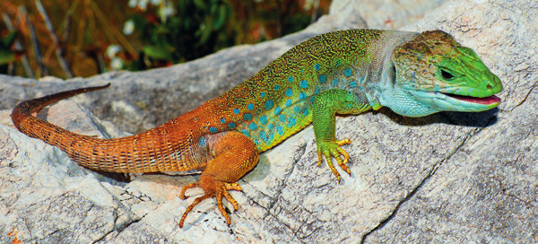
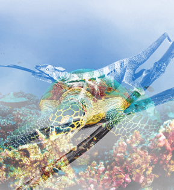
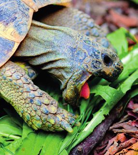
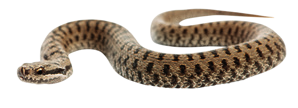
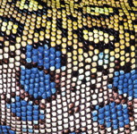

Los reptiles constituyen los primeros vertebrados auténticamente terrestres, si bien algunos, como los cocodrilos y muchas tortugas, están adaptados al medio acuático.
El cuerpo de los reptiles
Los reptiles disponen de cuatro patas, aunque las serpientes y algunos lagartos carecen de ellas.

Lagarto colorido sobre roca
En la cabeza destacan los ojos, los orificios nasales y una boca con fuertes dientes.
En el tronco suelen tener patas, normalmente con cinco dedos.
Algunos reptiles, como la salamandra, se desprenden voluntariamente de la cola, que después se regenera.
Las funciones vitales de los reptiles
La respiración es siempre pulmonar. Abundan los carnívoros, aunque algunas especies son herbívoras (casi todas las tortugas terrestres) y otras omnivoras (las tortugas marinas).
La fecundación suele ser interna. Son animales ovíparos que no incuban sus huevos. Hay algunos que son ovovivíparos, por ejemplo las víboras de nuestra península.
Algunos presentan un olfato adicional en el cielo de la boca, al que la lengua lleva las partículas olfativas.
Clasificación de los reptiles
Urodelos
Tienen cola. Pertenecen a este grupo la salamandra, el tritón y el gallipato.
Anuros
Carecen de cola. Son anuros la rana y el sapo.
Imágenes de reptiles

Tortuga carey en arrecife de coral

Tortuga comiendo verduras

Serpiente

Patrón coloridoRepresentación gráfica de una función